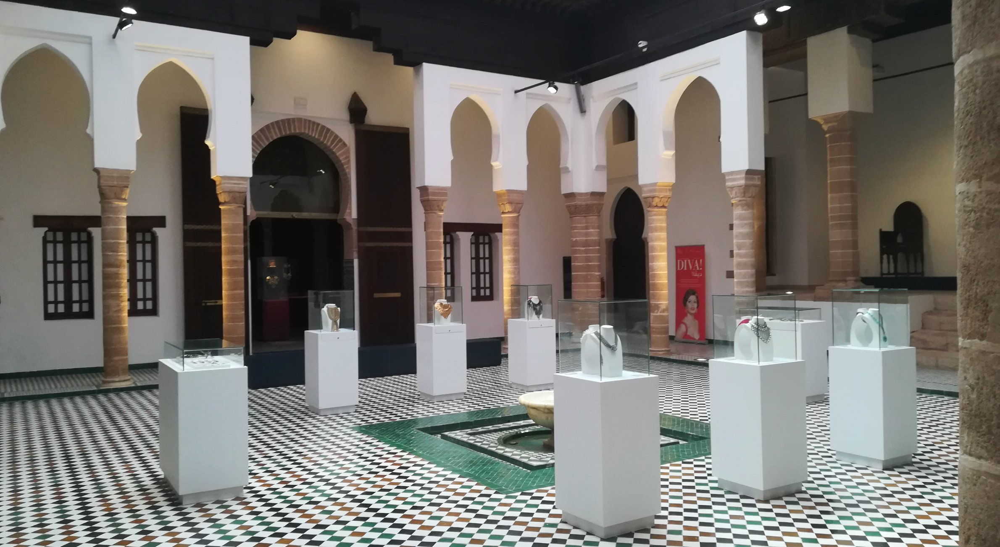

01
Day 01 · Arrival
Monday, June 29
Casablanca & Jewish Heritage
A city more complex than its legend — and a Jewish heritage hiding in plain sight.
Arrival into Casablanca, check-in and a freshen-up, then lunch at one of the historic Jewish clubs. The afternoon brings the Museum of Moroccan Jewry, the Beth-El Synagogue, and a rare meeting with the leadership of the Jewish community and the founders of Association Mimouna — including El Mehdi Boudra, the remarkable architect of Muslim-Jewish co-existence in Morocco.
Morocco: largest Jewish museum in the Arab world
Association Mimouna: founded 2007
Beth-El: one of Casablanca's oldest synagogues